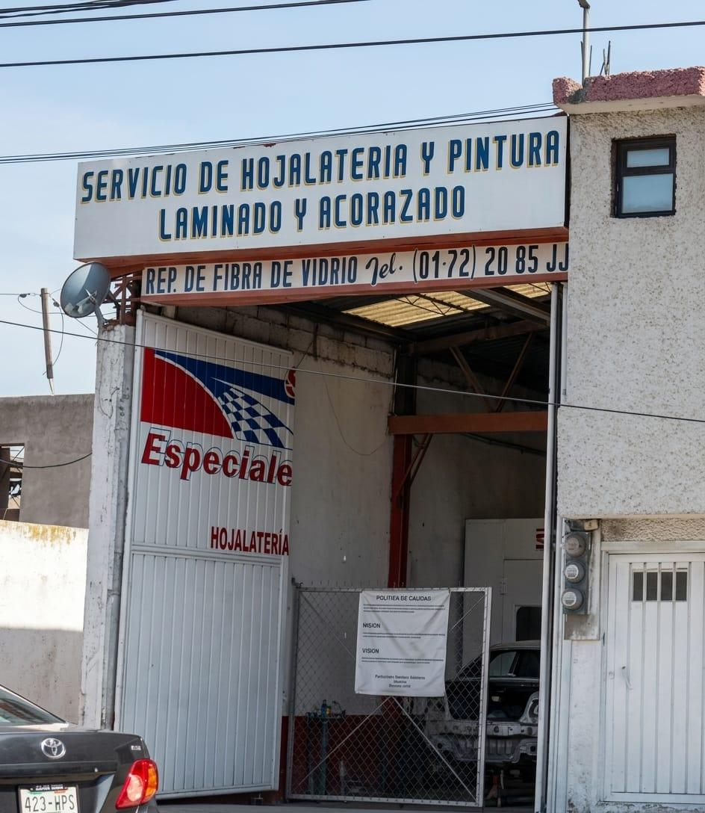
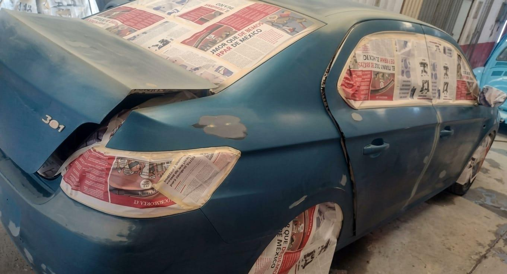
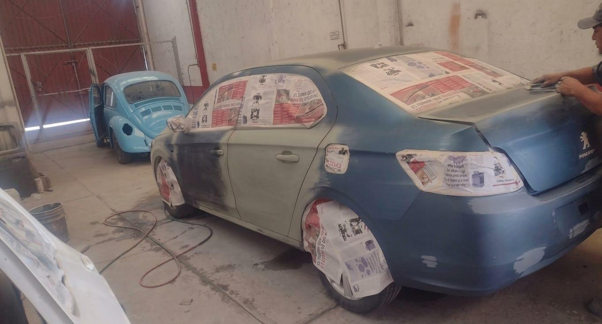
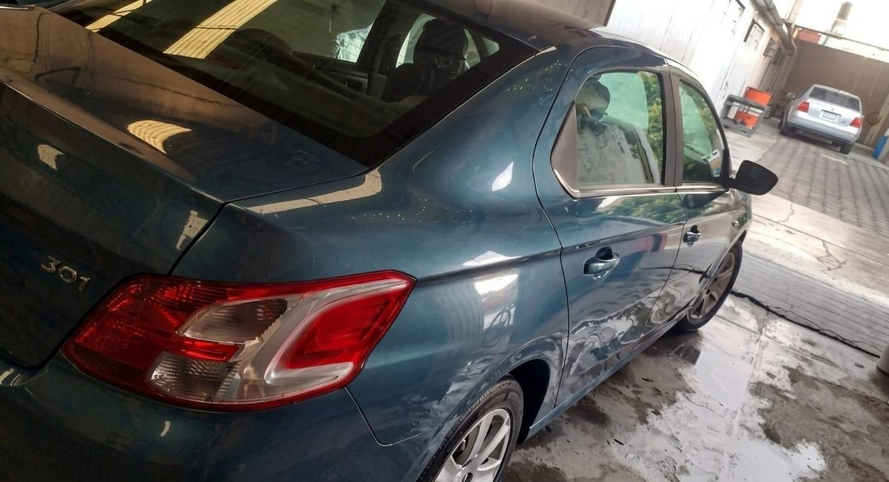

Hojalatería
Corrección de golpes, abolladuras y daños en piezas de la carrocería.
Taller de reparación automotriz
Hojalatería, pintura y renovación automotriz con atención personalizada y más de tres décadas de experiencia.

Sobre nosotros
En Servicios Especiales de Hojalatería y Pintura trabajamos desde 1993 para recuperar la apariencia de vehículos que han sufrido golpes, desgaste o daños en su pintura.
Nuestro objetivo es ofrecer un servicio cercano, cuidadoso y responsable, atendiendo cada unidad de acuerdo con el trabajo que realmente necesita.
Nuestros servicios
Desde una reparación puntual hasta un proceso de renovación exterior, cuidamos preparación, aplicación y acabado.
Corrección de golpes, abolladuras y daños en piezas de la carrocería.
Preparación de superficies y aplicación de pintura para recuperar color y presencia.
Trabajo de terminación para mejorar brillo, uniformidad y presentación exterior.
Atención integral de diferentes áreas para renovar la apariencia general del automóvil.
Nuestro proceso
Una reparación profesional requiere orden. Estas fotografías muestran parte del proceso real de preparación y el resultado terminado.


Revisamos las áreas que requieren reparación y definimos el trabajo necesario.
Se corrigen imperfecciones, se lijan superficies y se protegen las zonas que no serán intervenidas.
Se aplica el recubrimiento y se cuida la uniformidad del acabado.
Verificamos presentación y detalles antes de entregar el vehículo.
Transformación real

Galería de trabajos
Haz clic en una fotografía para verla en mayor tamaño.
¿Tu vehículo necesita atención?
Solicita información y prepara tu cotización.
Contacto
Comunícate con nosotros para solicitar información sobre hojalatería y pintura. También puedes visitarnos en nuestro taller.